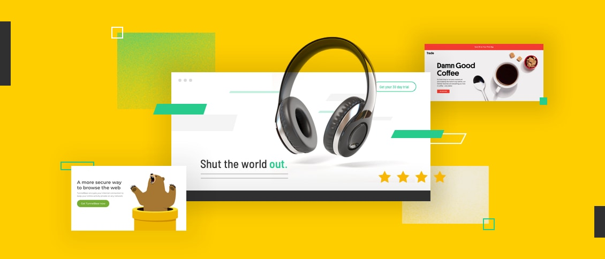

CALCULATOR
The Interactive Calculator is a modern and user-friendly web application designed to perform basic arithmetic operations with ease. Built using HTML, CSS, and JavaScript, this calculator provides a seamless and responsive user experience suitable for both desktop and mobile devices.
Key Features:
Basic Arithmetic Operations: Supports addition, subtraction, multiplication, and division.
User-Friendly Interface: Features a clean and intuitive layout with clearly labeled buttons for each function and number.
Responsive Design: Adapts to various screen sizes, ensuring usability on both smartphones and desktops.
Real-Time Calculation: Performs calculations instantly as users input numbers and operators, providing immediate feedback.
Error Handling: Includes safeguards to handle division by zero and other common input errors gracefully.
History Tracking: (Optional) Displays the last few calculations, allowing users to review previous operations.
Technology Stack:
HTML: Provides the structure and layout of the calculator interface.
CSS: Styles the calculator, including button hover effects, responsive design adjustments, and overall visual appeal.
JavaScript: Implements the calculator’s functionality, handling user input, performing calculations, and updating the display.
Use Cases:
Educational Tool: Ideal for students learning basic arithmetic and programming principles.
Daily Use: Provides a quick and accessible tool for everyday calculations, such as budgeting, shopping, or simple mathematical tasks.
Web Development Practice: Demonstrates fundamental skills in front-end development, including event handling, DOM manipulation, and responsive design.

LANDING PAGE
Certainly! When describing a landing page project, it's important to focus on its purpose, design features, technology stack, and potential use cases. Here's an example description you might use for showcasing a landing page project:
Project Description: Modern Landing Page
Project Title: Modern Landing Page
Description:
The Modern Landing Page is a beautifully designed, responsive web page tailored to capture user interest and drive engagement. Created using HTML, CSS, and JavaScript, this landing page is optimized for both aesthetic appeal and functionality, making it ideal for marketing campaigns, product launches, or promotional events.
Key Features:
Eye-Catching Design: Features a visually appealing design with a focus on high-quality graphics, bold typography, and a cohesive color scheme to grab users’ attention.
Responsive Layout: Adapts seamlessly to various screen sizes, ensuring a consistent experience on desktops, tablets, and smartphones.
Call-to-Action (CTA) Buttons: Strategically placed CTA buttons encourage users to take desired actions, such as signing up, subscribing, or making a purchase.
Hero Section: Includes a prominent hero section with a compelling headline, supporting text, and a striking background image or video to make a strong first impression.
Features and Benefits: Highlights key features or benefits of the product or service with engaging visuals and concise descriptions.
Testimonials and Reviews: Showcases user testimonials or reviews to build credibility and trust.
Contact Form: Provides an easy-to-use contact form for users to get in touch or request more information.
Animations and Interactivity: Implements smooth animations and interactive elements to enhance user experience and engagement.
Technology Stack:
HTML: Structures the content and layout of the landing page.
CSS: Styles the page with modern design elements, including responsive design, animations, and custom fonts.
JavaScript: Adds interactivity, such as form validation, smooth scrolling effects, and dynamic content updates.
Frameworks/Libraries (if used): Could include Bootstrap for responsive design or AOS (Animate On Scroll) for smooth animations.
Use Cases:
Marketing Campaigns: Ideal for launching new products or services, promoting special offers, or collecting leads.
Event Promotion: Effective for advertising events, webinars, or workshops with a clear call-to-action for registration.
Product Launches: Showcases new products with detailed information, visuals, and user testimonials to generate interest and drive sales.
Service Promotion: Highlights the features and benefits of a service, encouraging potential customers to get in touch or sign up..